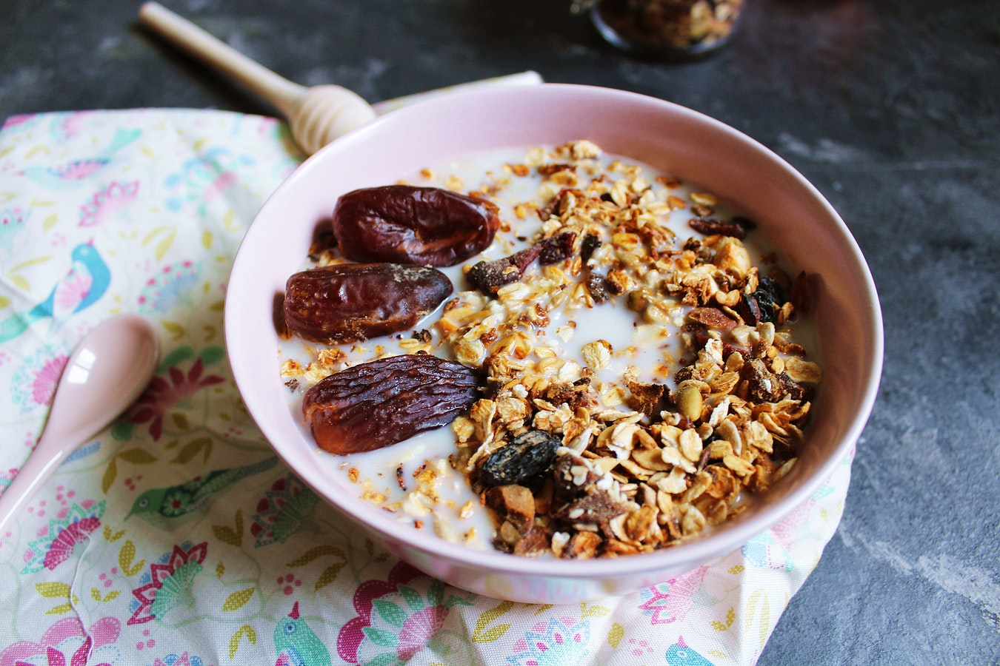

Le colazioni nel mondo
Italia: La più classica delle colazioni appartiene al nostro paese e ne abbiamo diverse varianti: dal dolce al salato.

Italia: La più classica delle colazioni appartiene al nostro paese e ne abbiamo diverse varianti: dal dolce al salato.
Per combattere il freddo, gli islandesi sono soliti cominciare la giornata con un porridge a base di farina d'avena.
Nel piatto completo che costituisce la classica colazione inglese non devono mancare fagioli, salsiccia, bacon, uova,